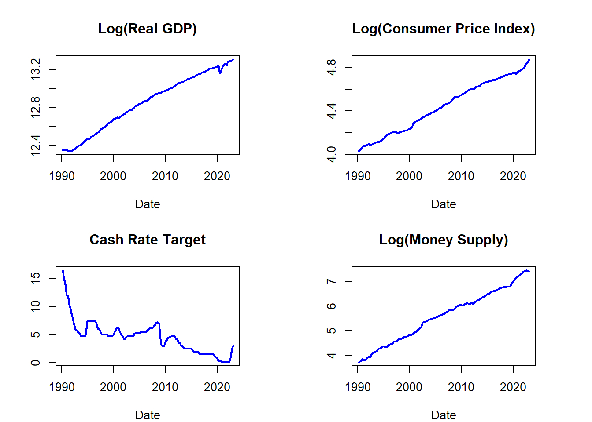

Examing the Relationship between Fiscal Policy and Income Inequality in Australia: A Structural Vector Autoregression Analysis
Abstract. Using data from the Australian Bureau of Statistics, this paper attempts to understand how changes in fiscal policy impact income inequality in Australia using a Structural Vector Autoregression (SVAR) approach.
Keywords. Fiscal policy, income inequality, impluse response function, structural vector autoregressions, Australia, Gini coefficient
Introduction
High levels of income inequality can lead to social and economic instability and well as limiting development. With the increasing exposure to the level’s income inequality has reached in Australia and worldwide, people are no longer happy to watch as the top 1% take in almost two-thirds of all new wealth.
Using an SVAR model, this paper examines the dynamic relationships between fiscal policy, such as government spending and taxation, and income inequality, measured by the Gini coefficient.
Data
The data required can all be taken directly from the Australian Bureau of Statistics who provide data from 1959 to 2022 on GDP, government spending, government revenue, and debt data from 1988. They also provide data relating to the Gini coefficient, however I am unable to find the series ID for this at present.
Below are plots of each of the available variables over time.



Preliminary Results
ACF PACF plots


Methodology
Below is the Structural Vector Autoregression (SVAR) modelrequired to capture the dynamics between the variables.
\[\begin{align} B_0 Y_t = b_0 + B_1 y_{t-1} +\dots +B_p y_{t-p} + u_t \end{align}\] \[\begin{align} u_t|Y_{t-1}~iid(0_N,I_N) \end{align}\]
Where:
\(Y_{t}\) is an \(N\times 1\) vector of endogenous variables, including the Gini coefficient, government spending, revenue, GDP, and debt.
\(B_0\) is an \(N \times N\) structural matrix capturing comtemporaneous relationships between variables.
\(u_t\) is an \(N\times 1\) vector of independent structural shocks, conditional on \(Y_{t-1}\).
Using this model I will give me an insight into dynamic relationships between government spending, revenue and income inequality. Impulse response functions and forecast error variance decompositions (FEVDs) will be used to analyse the effects of fiscal policy on income inequality.
Using both of these techniques together, I will gain an understanding of the long- and short-run impacts of shocks to government spending and taxation.